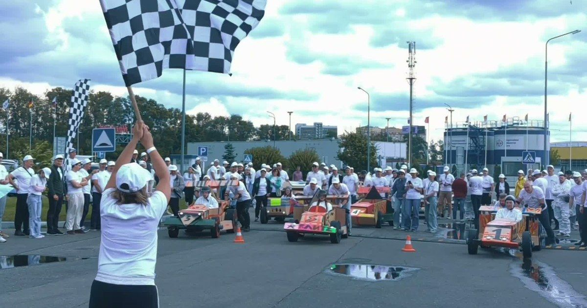
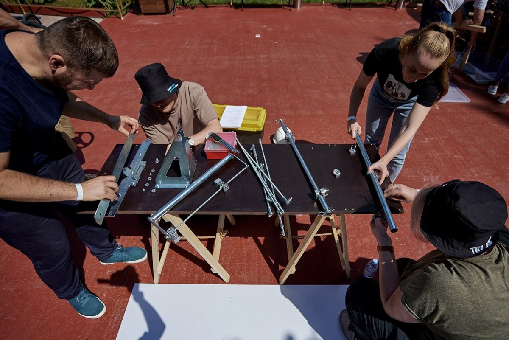
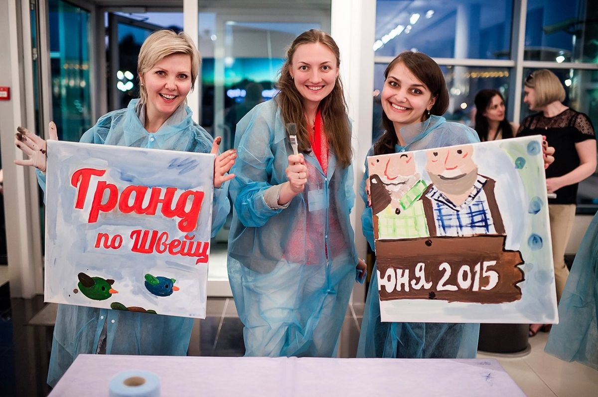
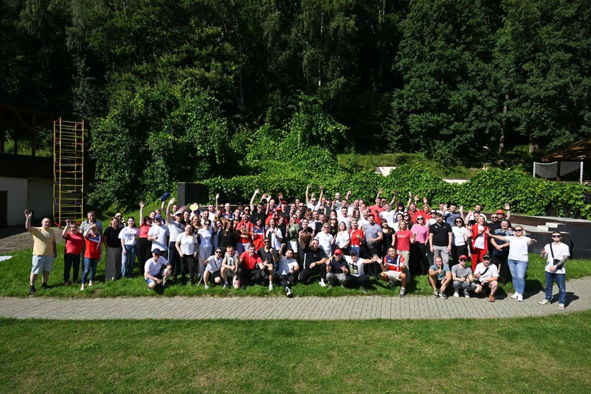

Тимбилдинг как инструмент HR: адаптация, вовлечённость и удержание на практике

Новичок в первые месяцы решает, остаться в компании или уйти. Решение складывается не из задач, а из людей вокруг: к кому подойти с вопросом, кто поможет, с кем пообедать. Тимбилдинг ускоряет именно эту часть, но только если HR ставит ему задачу заранее, а не заказывает «что-нибудь весёлое».
Я Мария Варламова, руковожу ивент-агентством Каталист. С 2010 года мы провели больше 5 000 проектов для компаний, от команд в 50 человек до корпоративов на 5 000. У нас больше 50 своих программ и 16 наград ивент-индустрии. Ниже разбираю, как превратить командный день из развлечения в рабочий инструмент для трёх HR-задач и как потом проверить, что он сработал.
Начинаем с задачи, а не с формата
Заявка часто звучит так: «Хотим тимбилдинг на 100 человек, что-нибудь интересное». Такой ивент людям понравится, но HR потом нечего показать руководству: непонятно, что должно было измениться.
Перед выбором формата ответьте на три вопроса:
- Какую проблему решаем. Новички не встраиваются, отделы не общаются, команда устала после тяжёлого проекта.
- Кто участвует. Сколько новичков, какие отделы, кто из руководителей.
- Что изменится через месяц и как это увидеть. Об этом подробно в разделе про замер.
Разница в формулировке видна сразу. Плохо: «сплотить коллектив». Хорошо: «чтобы 40 человек, пришедших за полгода, знали в лицо коллег из смежных отделов и могли к ним обратиться без посредников». Под вторую задачу ведущий соберёт команды и сценарий иначе, чем под первую.
Адаптация: смешиваем новичков и старожилов
Новичку трудно не с задачами, а с людьми: спросить неловко, а сам не разберёшься. Тимбилдинг снимает эту неловкость, потому что даёт общее дело, где спрашивать и договариваться нужно по правилам игры.
Работает это при двух условиях. Первое: команды собираем заранее по списку от HR, в каждой новички вперемешку с опытными сотрудниками из разных отделов. Если люди разобьются сами, новички окажутся вместе и поговорят друг с другом. Второе: в задании роли распределены так, что одному не справиться.
Пример механики. Для компании Wilo мы провели «Гонки Формула-1» на 350 сотрудников. Задача была праздничная, но устройство игры то же. Команды собирали собственные болиды, в каждой команде было 10 ролей, люди становились инженерами, конструкторами, дизайнерами, гонщиками и болельщиками. Чтобы болид выдержал техническую проверку жюри и три технических круга, людям пришлось договариваться. Собрали больше 50 болидов, на старт вышли все команды. Подробности и фото в кейсе гонок для Wilo. По итогам дня даже недавно пришедшие сотрудники быстро включились в общую работу и почувствовали себя частью коллектива.


Скажу честно: замера удержания по этому проекту у нас нет. Поэтому ниже отдельный раздел о том, как измерить результат самому. А если вы выстраиваете систему целиком, у нас есть разбор, где этапы адаптации новых сотрудников расписаны от первого дня до конца испытательного срока.
Вовлечённость: даём общий результат, который видно
Человек теряет интерес к работе, когда не видит, как его часть влияет на общее. Тимбилдинг может показать эту связь за три часа, если у задания есть общий итог, а не только победитель.
Пример: программа «Корпоративная картина». Больше 80 участников делятся на команды, каждая пишет свою секцию полотна, всего секций 16. Целиком картину до финала не видит никто. Линии должны совпасть на стыках, а цвета по тону, поэтому команды всё время сверяются с соседями. В финале секции соединяют, и получается одна картина.


Для HR здесь важны две вещи. Задание повторяет реальную работу: у каждого свой участок, а результат общий. И картина остаётся в офисе: к ней можно вернуться на планёрке, когда отделы опять не могут договориться.
Удержание: корпоратив как часть системы, а не галочка
Один праздник в год людей не удержит. Работает связка событий, которые идут по году:

- welcome-встреча для новичков в первые месяцы работы;
- командный день после большого проекта или реорганизации;
- общий праздник, например новогодний корпоратив.
Связка работает, когда каждое событие продолжает предыдущее. На командном дне участвуют те же смешанные группы, что на welcome-встрече, и знакомство не обнуляется.

На каждом событии добавьте признание. Руководитель называет конкретных людей и конкретные дела, а не благодарит «всех за отличный год». Это пять минут программы, но именно их люди потом пересказывают коллегам.
Внутренним коммуникациям советую с первого дня договориться о фото и видео. Снимки с ивента потом работают месяцами: во внутреннем канале, в материалах для кандидатов, на карьерной странице. Подборку форматов под разные задачи мы собрали на странице про программы командообразования.
Проверяем, что сработало
Без замера тимбилдинг остаётся «было весело». Минимальный набор для HR:
- Короткий опрос до и после. Три вопроса за неделю до ивента и те же через месяц. Например: «Знаю, к кому обратиться в соседнем отделе», «Мне комфортно задать вопрос коллеге не из моей команды», «Понимаю, как моя работа влияет на результат компании». Шкала от 1 до 5.
- Испытательный срок. Сравните, какая доля новичков прошла его до и после того, как вы добавили welcome-ивент.
- eNPS. Если вы его уже меряете, отметьте дату ивента и посмотрите на следующий замер.
Главное правило: первый замер делайте до ивента. Если начать после, сравнивать будет не с чем.
Когда тимбилдинг не поможет
Бывают случаи, когда тратить на него бюджет не стоит. Если люди уходят из-за зарплаты, перегрузки или конфликта с руководителем, ивент проблему не решит, а может вызвать раздражение: «лучше бы премию дали». Сначала решите причину, потом собирайте команду.
И ещё: не ставьте командный день на выходные без согласия людей. Ивент в личное время многие воспримут как обязанность, и пользы для вовлечённости не будет.
Шпаргалка для HR
- Сформулируйте задачу одной фразой: кто и что должен начать делать иначе.
- Сделайте замер до ивента.
- Соберите команды сами: новички вперемешку с опытными, отделы вперемешку.
- Выберите задание, где одному не справиться и есть общий итог.
- Добавьте в программу признание конкретных людей.
- Через месяц повторите замер и покажите руководству разницу.
Хитрость на десерт: позовите в подготовку двух-трёх сотрудников из разных отделов. Пусть помогут собрать команды и придумать название. В день ивента они сами позовут коллег, и звать людей рассылками HR почти не придётся.